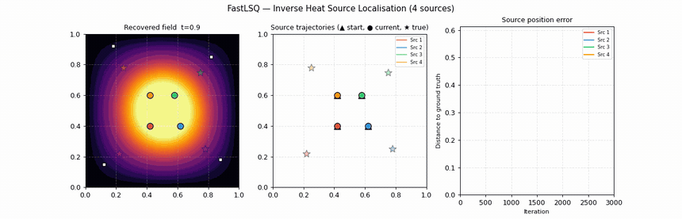
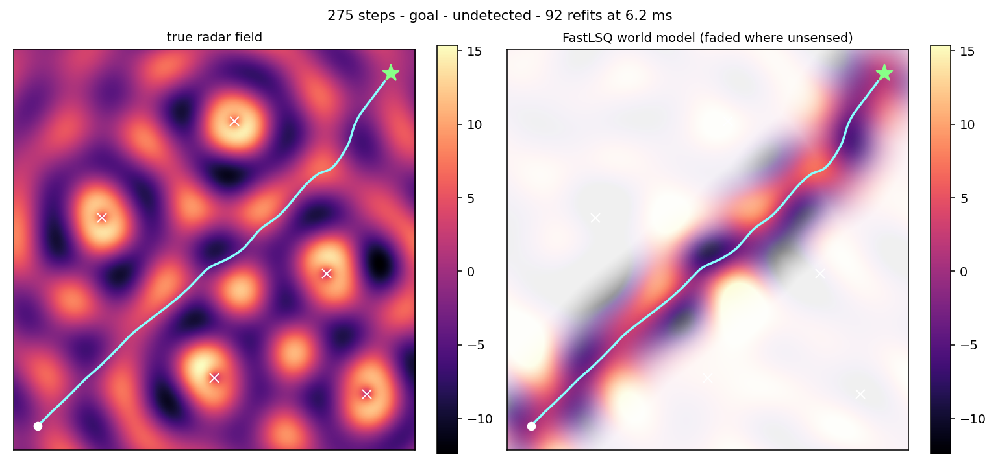

A differentiable
digital twin, in closed form.
Born from solving PDEs: fastlsq fits a random-Fourier surrogate of your field in one least-squares call. You get the field and every derivative — ∂t, ∇, Δ — analytically, at any query point. A twin you can drop straight into an optimiser, a Kalman filter, an inverse problem or a control loop.
Random sinusoids, one solve,
every derivative.
Drag N. Each feature is a frozen sinusoid sin(Wjx + bj);
only the coefficients β are solved for, by one least-squares call. Nothing here is
precomputed — the solve runs in your browser on every frame.
A surrogate over a
random Fourier basis.
01 · The basis
The unknown is expanded in a fixed basis of random sinusoids
φj(x) = sin(Wj·x + bj), with
Wj and bj drawn once and never updated.
02 · Why it works
Averaging enough random Fourier features recovers the Gaussian RBF kernel (Bochner). Smooth solutions live in that RKHS, so a few hundred sinusoids span the space you need.
03 · The fit
β comes from a single least-squares call. Because every feature is a plane
wave, differentiating just multiplies each coefficient by
Wjk and shifts the phase by
kπ/2.
One β. Every derivative, exact.
β is solved once, against order 0. Every curve below is then read off the same coefficients — no re-fit, no finite differences, no autodiff graph. The analytic derivative (solid) lands on the true one (dashed) at every order.
One skeleton.
Many inverse problems.
An inverse problem needs a forward model you can differentiate, evaluated thousands of times. fastlsq gives you both: the operator assembles in closed form, the system factors once, and every subsequent solve is a back-substitution whose gradient rides back through the same factor.
Pick a problem. Only the operator line changes — the loop around it is identical every time.
| unknown | — |
|---|---|
| observations | — |
| forward model | — |
| what fastlsq gives | — |
—
—Compose any operator.
One formula handles it.
Every snippet on this page is executed against the released package before publishing. The numbers in the comments are real output.
import fastlsq as fl
from fastlsq.problems.linear import Helmholtz2D
result = fl.solve_linear(Helmholtz2D(), scale=5.0)
u = result["u_fn"] # closed form — call it anywhere
m = result["metrics"]
m["val_err"] # 2.3e-08
m["method_used"] # 'svd' (auto-selected)
m["rank_used"] # 261 of 1500 featuresrandom features — val_err varies run to run around 10⁻⁸
import torch
from fastlsq import Op
from fastlsq.basis import SinusoidalBasis
# Helmholtz: Δu + k²u = f
L = Op.laplacian(d=2) + 10.0**2 * Op.identity(d=2)
basis = SinusoidalBasis.random(2, 1500, sigma=5.0)
x = torch.rand(800, 2, dtype=torch.float64)
A = L.apply(basis, x) # (800, 1500) — closed form
g = basis.gradient(x) # (800, 2, 1500) — no autodiff
No graph is built. L.apply and basis.gradient
evaluate closed-form expressions, so cost is independent of derivative order
and nothing is retained for a backward pass.
Two problems, end to end.
Both are scripts in the repository. Every number below is their printed output.

Inverse heat-source localisation
Four hidden heaters warm a plate. Four sensors record a temperature series as heat diffuses. From those 4 × 60 = 240 numbers, recover 24 unknown source parameters — position, shape and strength.
The forward model is the full space–time heat equation, and the search needs a complete PDE solve at every step. The (PDE + BC + IC) operator is assembled and Cholesky-factored once; each forward solve is then a back-substitution, and the gradient over all 24 parameters returns through the same factor.
| features | 2100 | observations | 240 |
|---|---|---|---|
| unknowns | 24 | iterations | 3000 (L-BFGS-B) |
| median |Δpos| | 0.013 | mean |Δpos| | 0.071 |
Three of four sources land within 0.02; the fourth does not. It settles 0.26 away with its intensity off by 130% — a local minimum of a genuinely non-convex problem. The mean above is dominated by that single miss, which is why the median is quoted beside it. Multi-start or continuation is the fix, and the point of a forward solve this cheap is that you can afford either.
examples/inverse_heat_source.py ↗
Stealth navigation — a twin refit in the loop
A drone crosses a radar interference field with no map: only a five-point cross of samples at its own position, streaming in as it moves. Every three steps it refits a surrogate over everything sensed so far — one Tikhonov least-squares solve — then steers on that surrogate's analytic gradient.
| features | 1000 | refits | 92 per episode |
|---|---|---|---|
| refit cost | 6.1 ms median | episode | 275 steps |
| peak exposure | 44.7 | detector at | 60.0 |
The ablation is the argument. Switch the gradient term off and drive straight at the goal: the detector trips at step 133 of what is otherwise a 275-step crossing. Steering on the closed-form gradient finishes 26% under the threshold. The twin is only trusted where the drone actually sensed — hence the fade in the right-hand panel.
examples/stealth_navigation.py ↗The paper.
Method, proofs, ablations and the benchmark suite are in Sulc, A., FastLSQ: Solving PDEs in One Shot via Fourier Features with Exact Analytical Derivatives, arXiv:2602.10541.
@misc{sulc2026fastlsq,
author = {Sulc, Antonin},
title = {{FastLSQ}: Solving {PDEs} in One Shot via {Fourier}
Features with Exact Analytical Derivatives},
year = {2026},
eprint = {2602.10541},
archivePrefix = {arXiv},
primaryClass = {math.NA},
doi = {10.48550/arXiv.2602.10541},
url = {https://arxiv.org/abs/2602.10541}
}